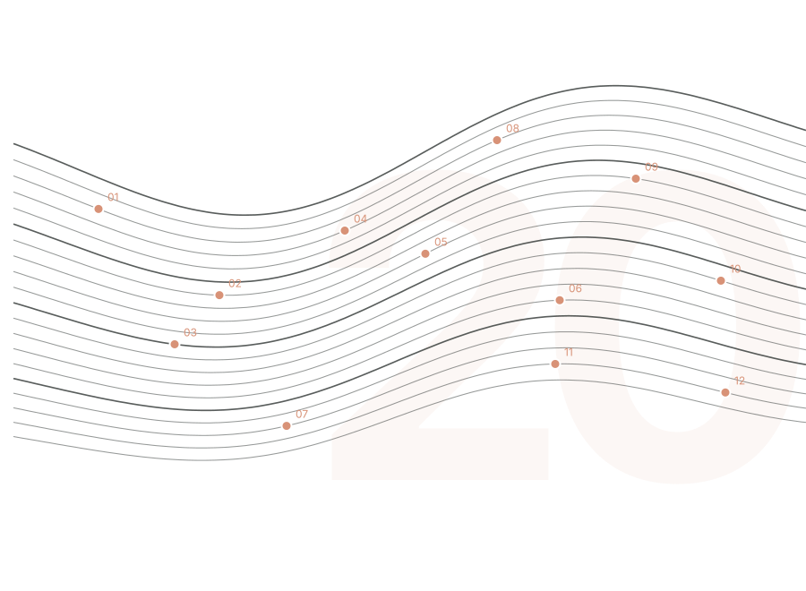
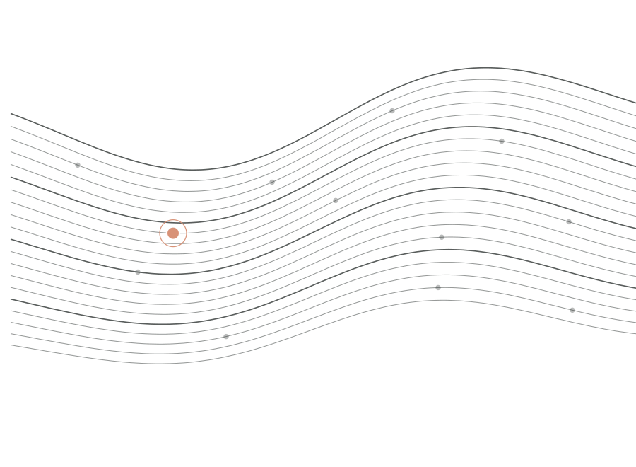
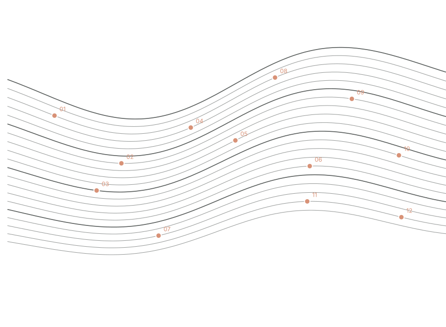
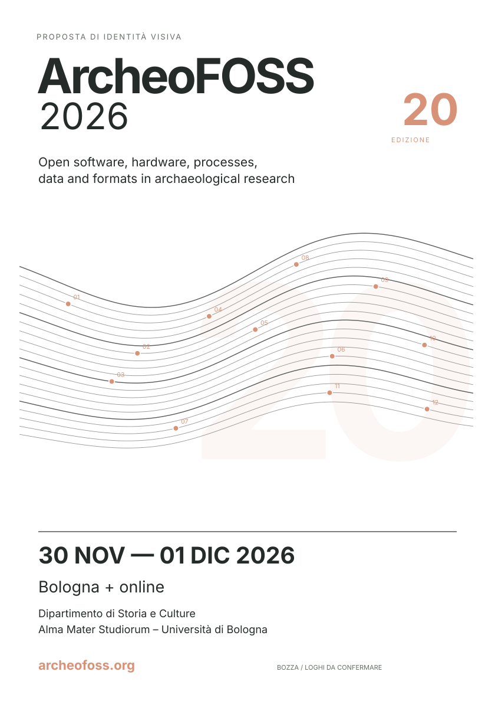
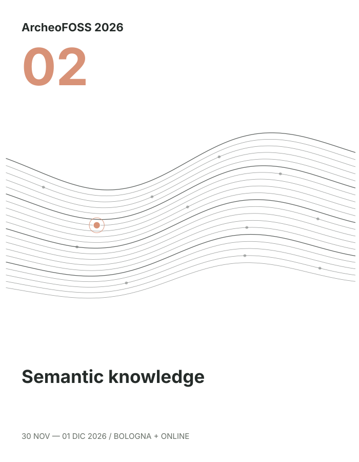
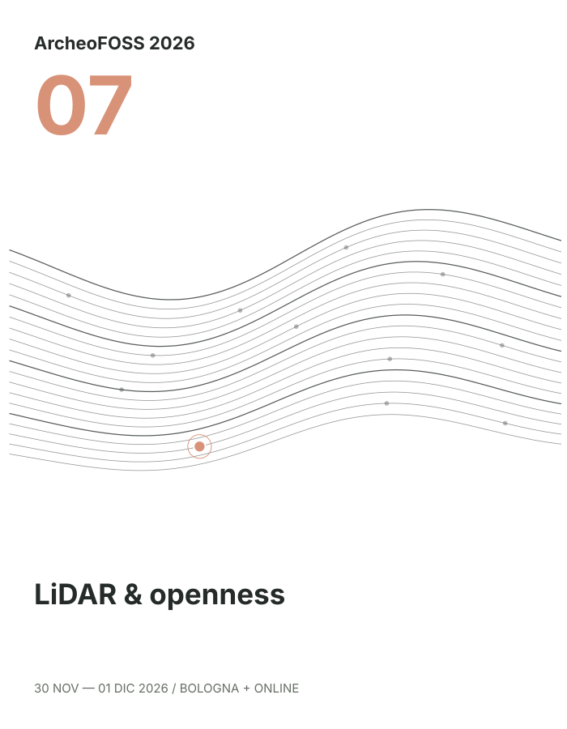
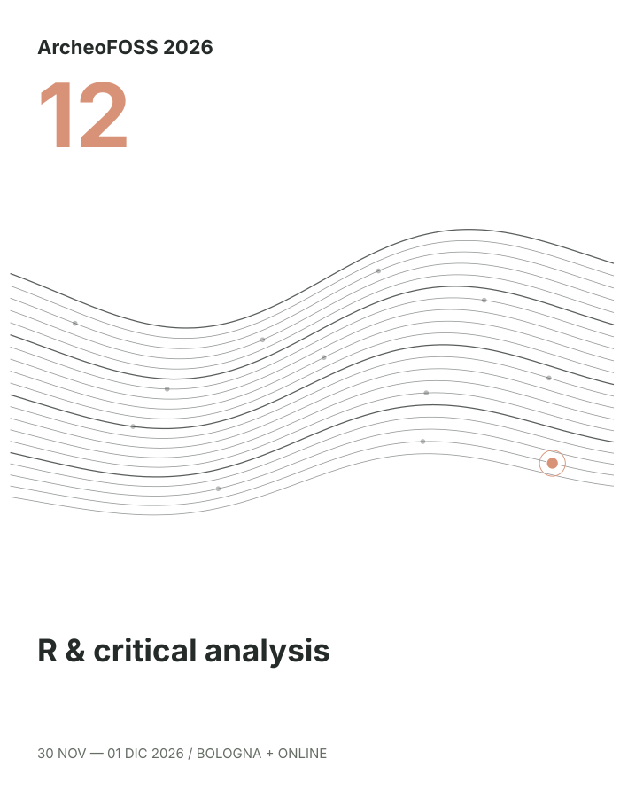

ARCHEOFOSS 2026 / PROPOSTA DI IDENTITÀ VISIVA
Data Strata. Dalle tracce archeologiche

20ª edizione
Concept per il comitato organizzativo
IT: Questa è una proposta di direzione grafica, da discutere insieme al comitato. Il titolo è un nome di lavoro del concept, non il titolo ufficiale del convegno. TR: Bu sunum grafik yön önerisidir. Data Strata / Open Network konferansın resmî teması veya sloganı değil, tasarım konseptinin çalışma adıdır.
01 / IL BRIEF
Un’identità che cambia formato.
Una grammatica comune per promuovere il convegno e orientare il pubblico nel programma.
Primo passaggio: condividere il concept e verificarlo su un prototipo A4.
IT: La richiesta della mail riguarda innanzitutto un concept flessibile. Il pieghevole richiede il programma finale prima di stabilire formato e numero di pagine. TR: Hocanın ilk talebi esnek bir grafik konsept. A4/A5 uyarlamaları ve program broşürü aynı sistemden türeyecek.
02 / L’IDEA
La conoscenzaper relazioni.
L’archeologia conserva tracce.
UNA METAFORA VISIVA Le linee richiamano la stratigrafia. I nodi identificano i panel. Lo spazio aperto lascia emergere le relazioni.
IT: Il riferimento alla visualizzazione scientifica riguarda il linguaggio e il metodo di costruzione. Non presentiamo questa composizione come un risultato di analisi. TR: Bilimsel görselleştirmeden esinlenen bir grafik metafor kuruyoruz. Eğriler ölçülmüş arkeolojik veriler değil.
03 / GRAMMATICA VISIVA
Ogni segno ha una funzione.
01 Strati Continuità del record archeologico 02 Nodi Dodici panel nello stesso campo 03 Riferimenti Ordine, allineamento e scala grafica Tocca i livelli per isolare gli elementi.
Composizione simbolica. Le curve e le distanze non codificano misure.
IT: Mostrare i livelli singolarmente. La griglia organizza la composizione e non simula coordinate di scavo. TR: Düğmelere basarak katmanları açıp kapatabilirsin. Izgara yerleşim için, sahte kazı koordinatları için değil.
04 / IL SISTEMA DEI PANEL
Dodici temi, un campo comune.
02 Struttura e verifica

Le quattro famiglie sono una proposta editoriale. Numerazione provvisoria dalla Call for papers, non ordine del programma.
IT: I dodici titoli vengono dalla Call for papers. Acquisizione, struttura e verifica, analisi e interpretazione, comunicazione e pratica sono categorie proposte per il design. I temi si sovrappongono. Non attribuiamo alla conferenza una tassonomia ufficiale. TR: 12 panel gerçek listedeki paneller. Dört aile bizim editoryal yorumumuz; resmî kategori veya program sırası değil. Seçilen panelin tam başlığı sağda gösterilir.
05 / LA VENTESIMA EDIZIONE
Il 20 diventa Venti linee attraversano il campo.
Il numero dell’edizione resta leggibile nella tipografia. La struttura grafica aggiunge un secondo livello di lettura.
Conteggi reali dell’identità.
20 
20 LINEE / 12 NODI / 1 SISTEMA
IT: Il 20 è tipografico e visibile. Evitiamo di promettere una forma in negativo che il segno non realizza. TR: 20 sayısı açık, büyük bir tipografik öğe. Yirmi çizgi ve on iki düğüm ikinci anlam katmanını kurar.
06 / COLORE
Una base calma. Un accento preciso.
Bianco #FFFFFF
Grafite #252B29
Pesca #D89277
Due combinazioni, lo stesso concept. Seleziona una palette: cambiano le slide, i manifesti A4/A5 e le varianti dei panel.
1 · Bianco / Grafite / Pesca Fondo bianco. Accento da “per relazioni”. 2 · Carta / Grafite / Ossido La combinazione della proposta originale.
Palette attiva: 1 · Bianco / Grafite / Pesca.
I codici sono RGB per lo schermo. La resa di stampa richiede una prova sul supporto scelto.
IT: La prima opzione usa Bianco #FFFFFF, Grafite #252B29 e Pesca #D89277, il colore di “per relazioni” nella slide 03/19 originale. La seconda conserva Carta #F4F1E8, Grafite #252B29 e Ossido #AC4B35. I pulsanti nella barra e in questa slide applicano la scelta a tutta la presentazione e agli SVG scaricabili. TR: İlk seçenek beyaz, grafite ve orijinal 03/19’daki “per relazioni”nin şeftali tonu. İkinci seçenek orijinal Carta/Grafite/Ossido. Üst çubuktaki veya bu slayttaki düğmeler sunumun tamamını ve indirilebilir SVG’leri birlikte değiştirir.
07 / TIPOGRAFIA
Aa
Inter Una voce chiara per titolo e informazioni.
Regular / Medium / Semibold / Bold
IBM PLEX MONO / ETICHETTE E CODICI
ArcheoFOSS
30 novembre / 1 dicembre
Bologna + online
PANEL 02 / SEMANTIC KNOWLEDGE
La gerarchia nasce dalla scala e dal peso.
IT: Inter è il carattere principale. IBM Plex Mono distingue numeri di panel e annotazioni. Non ridurre il testo lungo per farlo entrare: accorciarlo nei materiali promozionali e mantenere i titoli ufficiali nel programma e nell’appendice. TR: Inter ana yazıtipi, IBM Plex Mono panel numaraları için. Uzun resmî başlıklar programda korunacak, afişte kısa editoryal etiketler kullanılacak.
08 / PROTOTIPO A4
L’immagine attira. Un manifesto verticale con quattro livelli di lettura.
Identità ArcheoFOSS e 20ª edizione Campo grafico Strati e nodi al centro Informazioni Date, città e modalità Riferimenti Sito e loghi istituzionali Scarica il prototipo SVG Bozza di concept. Loghi e sede precisa da confermare.

A4 / 210 × 297 MM IT: Questo è il prototipo che rende la proposta valutabile. Il testo ArcheoFOSS è una composizione tipografica di lavoro, non una modifica autorizzata del marchio ufficiale. Date, Bologna e modalità ibrida provengono dalle fonti ufficiali. La sede specifica e i loghi richiedono conferma. TR: Bu somut afiş taslağı. Resmî logoyu yeniden tasarlamadık; yazıyla geçici kimlik kullandık. Kesin salon ve kurumsal logolar eklenecek.
09 / ADATTAMENTO A5
Compatto, L’A5 conserva il segno e riduce il testo secondario.
La data e la città restano centrali. Il sito guida alle informazioni complete. Margini, linee e corpi tipografici si verificano alla dimensione reale.
Scarica la variante A5 Le anteprime non rappresentano il rapporto fisico fra i due formati.
IT: L’A5 è un’ipotesi di adattamento con istituzione abbreviata. È necessario verificare il testo minimo e i tratti sulla stampa reale. TR: A5 versiyonunda ikincil kurum satırını kısalttım. İki maket ekranda tasarımı kıyaslamak için gösteriliyor, gerçek boyut ilişkisi değil.
10 / PROGRAMMA PIEGHEVOLE
Due pieghe, due giornate.
A3 aperto 420 × 297 mm → A4 chiuso. Quattro facciate; un giorno per pagina interna.
Distribuzione dei panel indicativa. Orari, relatori e sale da inserire nel programma definitivo.
IT: Due alternative selezionabili, con anteprime complete e SVG scaricabili in entrambe le palette. Il bi-fold è un A3 piegato a metà: esterno con retro e copertina, interno con due pagine A4, una per giorno e tutti i dodici titoli dei panel. Il tri-fold DL è un A4 a fisarmonica: tre pannelli da 99 × 210 mm e sei facciate. L’interno contiene due giornate sintetiche e una mappa tematica editoriale; l’esterno contiene indice, informazioni e copertina. Per tutti gli interventi può servire un programma più esteso. La distribuzione 01–06 / 07–12 mostra soltanto la capacità del layout, non il programma approvato. TR: İki format, iki yüzün tam önizlemesi ve palete uyumlu SVG indirmeleri var. İkili A3/A4 formatının iki iç sayfası birer güne ayrıldı. DL üç panel / altı yüzey içerir; iki gün kısa panel etiketleriyle gösterilir. 01–06 ve 07–12 ayrımı program kararı değil, yerleşim örneğidir. Saatler ve konuşmacılar kesin programdan eklenmeli.
11 / SERIE DEI PANEL
Una variazione riconoscibile.



Il campo resta costante. Cambiano il nodo evidenziato, il numero e l’etichetta breve. Titoli completi nell’appendice.
IT: Tre varianti mostrano la capacità del sistema di sostenere una serie. Le etichette sono abbreviazioni editoriali, non sostituiscono i titoli approvati. I numeri seguono provvisoriamente la Call for papers. TR: Her panel için aynı grafik alanda farklı düğüm öne çıkıyor. Bu kısa başlıklar tasarım etiketi; resmî başlıkların yerine geçmiyor.
12 / ESTENSIONI DIGITALI
Lo stesso campo, altre proporzioni.
20ª EDIZIONE ArcheoFOSS 30 NOV / 01 DICBologna + online
OPEN ARCHAEOLOGICAL RESEARCH ArcheoFOSS 2026 30 novembre / 1 dicembre
Post verticale Banner / slide
Il ritaglio riguarda il campo grafico. Le informazioni si ricompongono per ogni formato.
IT: Questa slide mostra due applicazioni concettuali. Il testo si ricompone nel layout, non si taglia. Le immagini SVG del pacchetto possono essere riutilizzate per creare i file finali. TR: Dikey paylaşım ve yatay banner örnekleri. Görsel alan kırpılabilir ama yazılar her formatta yeniden yerleştirilmeli.
13 / DALLA BOZZA ALLA STAMPA
La qualità passa dai dettagli.
01 / LEGGIBILITÀ Gerarchia verificata Data e luogo leggibili a distanza. Testi secondari verificati su A4 e A5 stampati al 100%.
02 / SEGNO Linee riproducibili Indicazione iniziale: tratti di almeno 0,3 pt. Prova di stampa con la tipografia prima dell’esecutivo.
03 / PRODUZIONE File concordati Abbondanza e profilo colore secondo la tipografia. Riferimento iniziale: 3 mm di abbondanza.
04 / IDENTITÀ Materiali ufficiali Loghi vettoriali autorizzati, denominazioni corrette e area di rispetto. URL finale e programma verificati.
Gli SVG inclusi sono prototipi RGB, senza abbondanza. L’esportazione PDF della presentazione riguarda le slide.
IT: Questi sono criteri di produzione, non certificazioni dei prototipi. La tipografia stabilisce i requisiti effettivi, compreso il profilo CMYK e PDF/X. I file inclusi non sono esecutivi pronti per la stampa. TR: Paket RGB taslaklar içeriyor. 3 mm taşma ve 0,3 punto çizgi ilk öneri; matbaa doğrulayacak. Sunumu PDF yapmak afişi matbaaya hazır hale getirmez.
14 / CONFRONTO CON IL COMITATO
Quattro decisioni per procedere.
01 Direzione visiva Confermare strati, nodi e palette scelta.
02 Marchi e informazioni Raccogliere loghi, sede precisa e diciture approvate.
03 Contenuto del programma Definire sintesi, interventi, lingue e numero di pagine.
04 Prototipo e prova Validare A4 e A5 a dimensione reale, poi produrre la serie.
IT: Chiudere la discussione su scelte concrete. Proporre prima la validazione del concept e dell’A4, poi le declinazioni. TR: Toplantıyı bu dört somut karar ile bitirebilirsin. Önce konsept ve A4 teyidi, ardından diğer formatlar.
PROPOSTA / DATA STRATA + OPEN NETWORK
Un’identità costruita
Il concept interpreta il sapere archeologico come un sistema stratificato e connesso. Venti linee richiamano l’edizione, dodici nodi identificano i panel. La stessa grammatica accompagna i materiali promozionali e il programma.
ARCHEOFOSS 2026 / BOLOGNA / 20ª EDIZIONE
IT: Sintesi da usare come testo breve di presentazione del concept. Nessuna proposta di slogan ufficiale è implicita. TR: Bu paragraf konsept açıklaması olarak hocayla paylaşılabilir. Sonraki üç slayt kaynaklar ve gerçek panel başlıklarıdır.
APPENDICE / FONTI E ATTRIBUZIONI
Fonti, limiti e materiali.
Design e software Composizioni vettoriali generative originali. Posizioni, distanze e famiglie dei panel sono scelte editoriali.
reveal.js 5.2.1, licenza MIT.
Il sito ArcheoFOSS dichiara una licenza CC BY-SA 4.0. I titoli completi compaiono nelle due slide successive. Il concept non costituisce una grafica ufficialmente approvata.
Attribuzioni complete IT: Il file allegato è la fonte dei testi dei panel. Le informazioni essenziali sono state verificate sul sito. La Call for panels precedente indica un massimo di dieci, mentre la Call for papers corrente contiene dodici panel: per il design usiamo l’elenco corrente. TR: Önceki panel çağrısında 10 panel üst sınırı yazıyor, güncel bildiri çağrısı 12 panel içeriyor. Güncel listeyi kullandık. Resmî sıralama henüz kesin değil.
APPENDICE / TITOLI UFFICIALI 01–06
I panel della Call for papers.
Numerazione di lavoro nell’ordine della fonte. Ordine del programma ancora da definire.
IT: Prima metà dei dodici titoli, riportati integralmente senza traduzione. TR: İlk altı panelin tam İngilizce resmî başlıkları.
APPENDICE / TITOLI UFFICIALI 07–12
I panel della Call for papers.
Titoli dalla Call for papers 2026 e dal testo fornito. archeofoss.org/2026/call-for-papers
IT: Seconda metà dell’elenco. Tornare alla slide delle decisioni o alla sintesi per terminare la discussione. TR: Son altı panel. Kapanış için kararlar veya konsept özeti slaydına geri dönebilirsin.